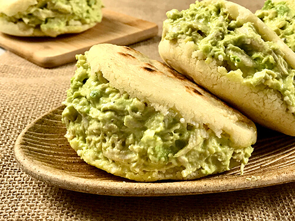

Reina Pepiada

Description
the Reina pepiada arepa , basically the filling consists of a mixture of cooked chicken, avocado and mayonnaise, believe me (for those who have not tried them) that this filling is irresistible!
Ingredients:
- 1 whole chicken breast, cooked and shredded
- 1 small onion (for cooking the chicken)
- 2 cloves of garlic (for cooking the chicken)
- 2 avocados
- 2 tablespoons mayonnaise
- precooked corn flour
- Water
- Salt and pepper to taste
Steps
- In a container, mix the water, butter and half a teaspoon of MAGGI
- Add the flour little by little, stirring constantly and integrating well until the dough is smooth
- Knead for 1 min, divide the dough into 4 equal portions and make a ball with each portion. Flatten each ball between the palms of your hands to form arepas.
- Cook the arepas in a budare or frying pan over medium heat. Leave for 4 minutes on each side or until golden brown.
- Separately, place the avocado and lemon juice in a bowl. With the help of a fork, mash until you obtain a puree.
- Add the mayonnaise, the shredded chicken, the remaining MAGGI® Naturísimo Seasoning and the cilantro. Mix well
- Open the arepas in half carefully and fill with the mixture, all in equal parts.
- Serve and enjoy these delicious arepas stuffed with queen pepiada with MAGGI® Naturísimo Seasoning.
Back